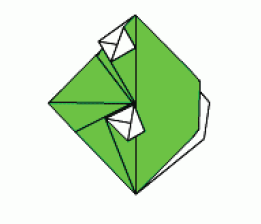
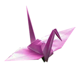

이 본문의 배경은 황토색(tan)이며, 글자색은 RED GREEN BLUE 값 #EE015입니다. 이 섹션 안의 배경 색은 흰색입니다. 부가적인 HTML마크업이 적용된 텍스트가 있고 그 뒤에는 텍스트가 들어있는 단락이 있습니다. 이 섹션 밖의 이후 부분에는 텍스트, 이미지, 텍스트, 하이퍼링크가 순서대로 나옵니다.
이 섹션의 테두리 색상은 개구리 이미지의 색과 같습니다.
보다시피 저는 종이접기를 좋아합니다. 아래 그림은 개구리 머리 접기입니다.
 이 개구리를 접는 방법은
마이어 가족의 종이접기 페이지를 참고하세요.